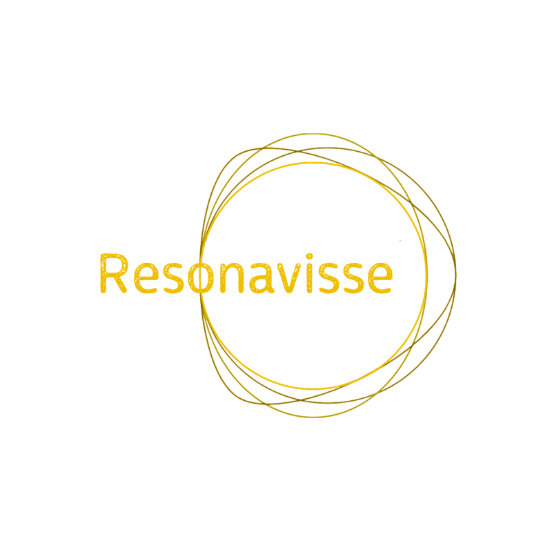

Resonavisse – from the Latin resonare, to have resounded – is a cultural and artistic association born from the desire to create a living space for exploration, creation, and sharing: a space for encounters and creative contamination between art, human experience, and multiple knowledges.
The association pursues cultural, artistic, and social aims, placing at its core the experimentation with artistic languages as a means to express one’s presence in the world, to awaken critical awareness, and to foster consciousness and transformation. We believe in art as a relational practice and a tool to engage, awaken, and activate those who encounter it. We support both practical and theoretical research, and we nurture the meeting of bodies, stories, and visions through expressive forms ranging from performance to theatre, from sculpture to voice, from sound to audiovisual creations.
Resonavisse – dal latino resonare, essere risuonato – è un’associazione culturale e artistica nata con l’intento di creare uno spazio vivo di esplorazione, creazione e condivisione, un luogo dove possono incontrarsi e contaminarsi pratiche artistiche, esperienze umane e saperi diversi.
L’associazione persegue finalità culturali, artistiche e sociali, mettendo al centro la sperimentazione dei linguaggi dell’arte come veicolo per esprimere la propria presenza nel mondo, attivare lo sguardo critico, generare consapevolezza e trasformazione. Crediamo nell’arte come pratica relazionale e strumento per sensibilizzare e attivare chi la incontra. Promuoviamo la ricerca pratica e teorica, e coltiviamo l’incontro tra corpi, storie e visioni attraverso forme espressive che spaziano dalla performance al teatro, dalla scultura alla voce, dal suono alle creazioni audiovisive.
